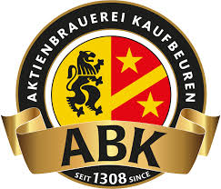
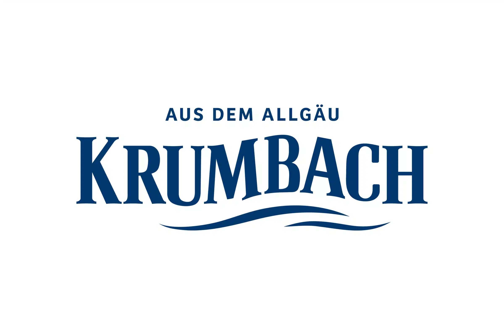

Unsere Sponsoren
Spieltag · Trikot · Dauerkarten · Präsentation





Werde ein Teil von uns - werde Sponsor
Wir suchen Sponsoren, die unser engagiertes Team unterstützen möchten und mit unserer Leidenschaft für den Sport identifizieren können. Schließen Sie sich uns an und erleben Sie die Freude am Spiel!

Unterstützung - Spenden
Jede Form der Unterstützung ist uns herzlich willkommen und wird sehr geschätzt. Gemeinsam können wir Großes erreichen und die Begeisterung für den Sport weitertragen. Vielen Dank für Ihr Interesse!

wir bieten - werde Mitglied
Wir bieten jederzeit spannende Spieltage und setzen uns für die Förderung und den Wachstum unseres Teams und Vereins ein. Mit Leidenschaft und Engagement schaffen wir ein Umfeld, in dem jeder Einzelne sein volles Potenzial entfalten kann.
Sponsoring anfragen ↗